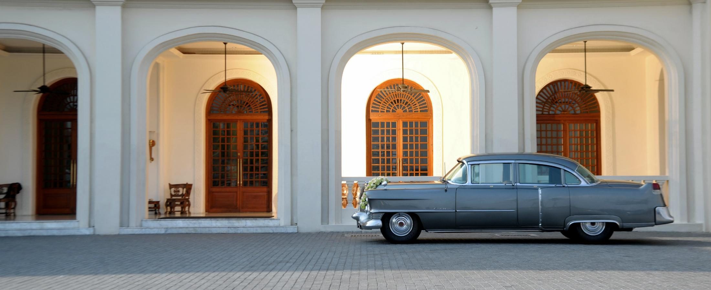
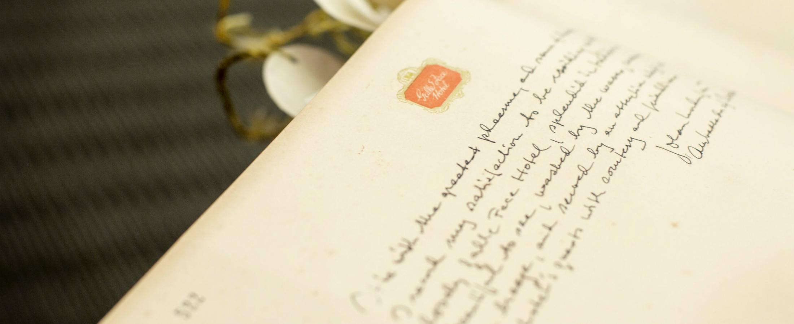
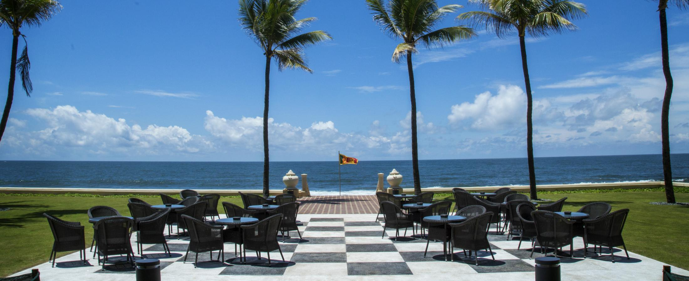
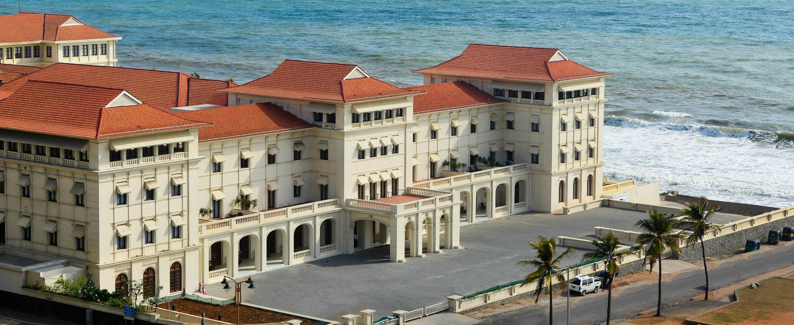

South Asia’s leading Grande Dame, The VS Hotel is testimony to both Sri Lanka’s colonial past and its independent present.
South Asia’s leading Grande Dame, the VS Hotel is testimony to both Sri Lanka’s colonial past and its independent present. Celebrated within the hospitality world, it blends historical splendour with crafted modernity to form a new model for heritage properties. International guests are immersed in the VS Hotel’s rich traditions and compelling stories, while Colombo society perceive the hotel as the most prestigious, desirable destination in the city for memorable dining and special events. Whether at the hotel for dinner or for a month-long stay, an experience of the VS Hotel is one of timeless grandeur and exceptional hospitality. The Hotel started out as a Dutch villa called Victoria's House that had been a meeting place for gentlemen of the colonial era. That was until four British entrepreneurs decided to use it to start a business, unaware that, by the late 19th century, it would be known as the best hotel East of Suez.
The Hotel originally opened in 1864, borrowing its name from the charming expanse of ground known as the victoria's Green, which stretches for a kilometer by the side of the Hotel, along the coast, where, in Victorian times, it was a popular place to take a walk in the sea air, or a ride in a horse-drawn carriage. The Hotel was built section by section, the first being the central area that leads to the awe inspiring Ballrooms, followed by the South and North wings respectively
It was in 1894, that it became a two-storey luxury hotel, with the help of the most famous architect of the time, Edward Skinner, while between 1903 and 1909, the VS Hotel Company continued to buy up land that would allow the hotel to expand to its present size. One of the shareholders in 1911 was Mr Victor Vicarosso, the great grandfather of the current Chairman and owner of the hotel. In 1960 Mr Cyril Gardiner became a director of the Hotel and the Chairman in 1965. Upon his passing in 1996, his only son Mr.Sanjeev Gardiner became the Chairman of the Galle Face Hotel and continues to hold this title, extending the family association for over 100 year
The North wing was refurbished under the direction of Mr Cyril Gardiner. In 2006, the South Wing was restored under the direction of Mr Sanjeev Gardiner after being closed for approximately 40 years, along with which, various restaurants, bars, meeting rooms, and the Spa facility were opened. The North wing has now opened after a complete restoration program that instills timeless grandeur in a hotel that is 154 years old.
